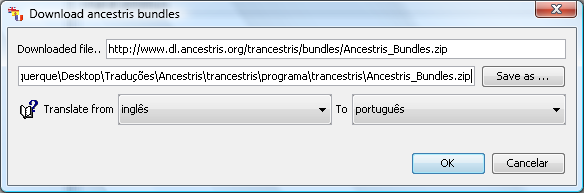
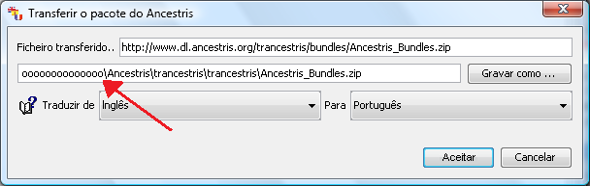
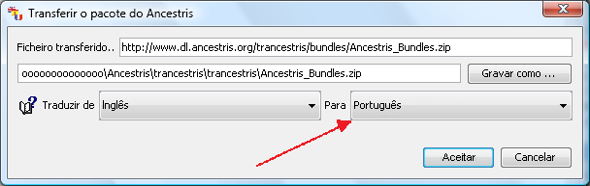
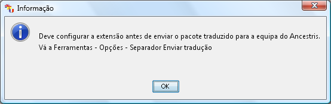
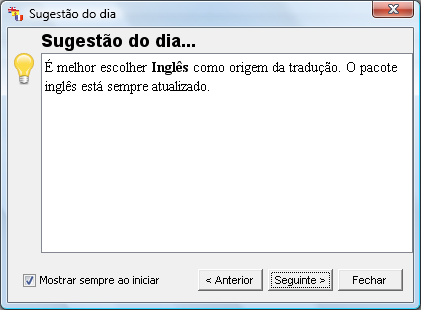
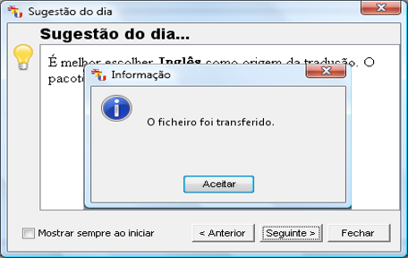
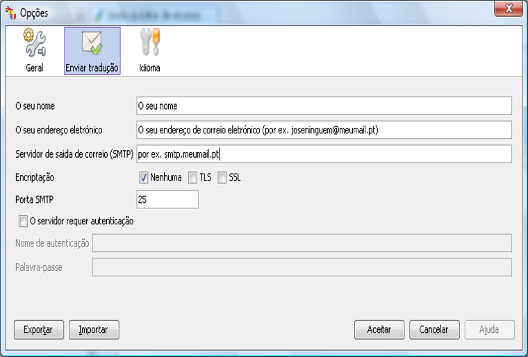

A primeira vez que executar o Trancestris, ao abrir, surge uma janela. Tem
de o configurar à sua vontade. Aqui está ela:

Tem duas coisas a verificar:
A primeira é o localização
no seu disco onde quer gravar o ficheiro que vai transferir, chamado
"Ancestris_Bundles.zip",
que contém todos os ficheiros de propriedades. Esses ficheiros
terão frases e palavras para traduzir, mas também as
que já estão traduzidas.
Altere a localização,
o caminho, usando o botão "Gravar como...".
Na imagem abaixo, alterámos a localização de
"/home/fm/.trancestris" para
"ooooo\Ancestris\trancestris\trancestris\Ancestris_Bundles.zip".
Claro, não altere o nome do ficheiro
“Ancestris_Bundles.zip”.

Outra coisa, não altere a primeira linha, é o repositório
do ficheiro de recursos.
Feito isto, tem de dizer ao programa para que idioma quer traduzir.
É melhor manter o Inglês como idioma de origem, mas tem de
escolher o idioma de destino. Digamos que queremos traduzir de Inglês
para Português. Use a lista pendente à direita para escolher o
idioma, aqui o Português.

O que acontece a seguir? Surge uma mensagem. Clique em "Aceitar".

Agora tem de configurar as definições, para poder enviar a sua
tradução, uma vez feita, para a Equipa do Ancestris.
É
possível que surja uma mensagem que lhe dá diferentes sugestões.
É a chamada "Sugestão do dia". Clique em
"Fechar" para se ver livre dela. Mas é sempre boa ideia
lê-las, de tempos a tempos.

Surge outra mensagem. É uma mensagem para o informar que o ficheiro
"Ancestris_Bundles.zip" foi
transferido em 2º plano, enquanto configurava o Trancestris. Simplesmente
clique em” Aceitar" para a fechar.

Atrás da janela "Sugestão do dia",
encontrará, uma vez fechada, um menu onde tem de configurar as suas
definições para poder enviar o seu trabalho (as suas
traduções), para a Equipa do Ancestris.

Veja o tópico Configuração
– Enviar tradução para mais informações.
Ótimo,
estamos prontos para começar a traduzir :-)
|
|
|